The Metamorph Merlin
Knights of the Round Table, Book IV, Chapter III
Pink gold, 45 mm
Limited to 28 pieces
For more than a decade, the Knights of the Round Table have carried the Arthurian legend onto the dials of the Maison. The fourth book follows Merlin, wizard, prophet and counsellor to King Arthur. After his omniscience and his enchantments, this final chapter turns to the power he kept for the forest: the freedom to change form, and to walk Brocéliande as a white stag.
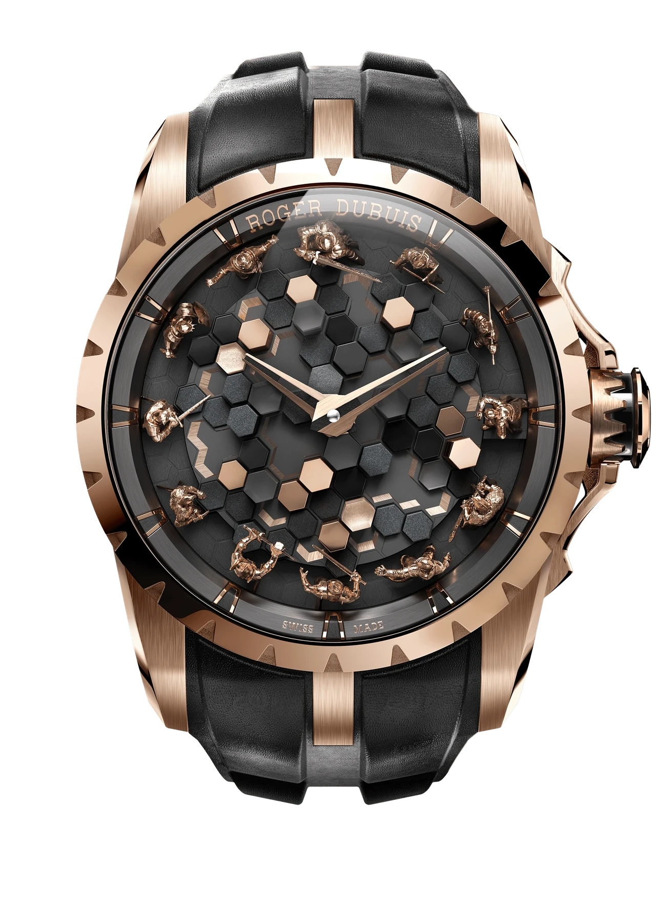
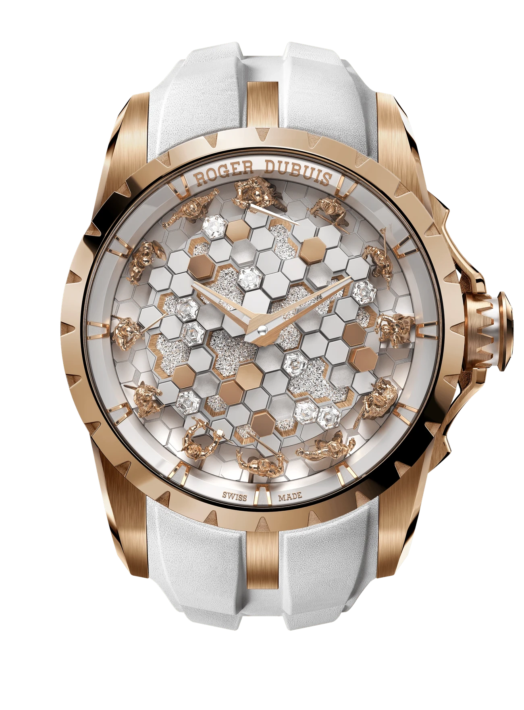
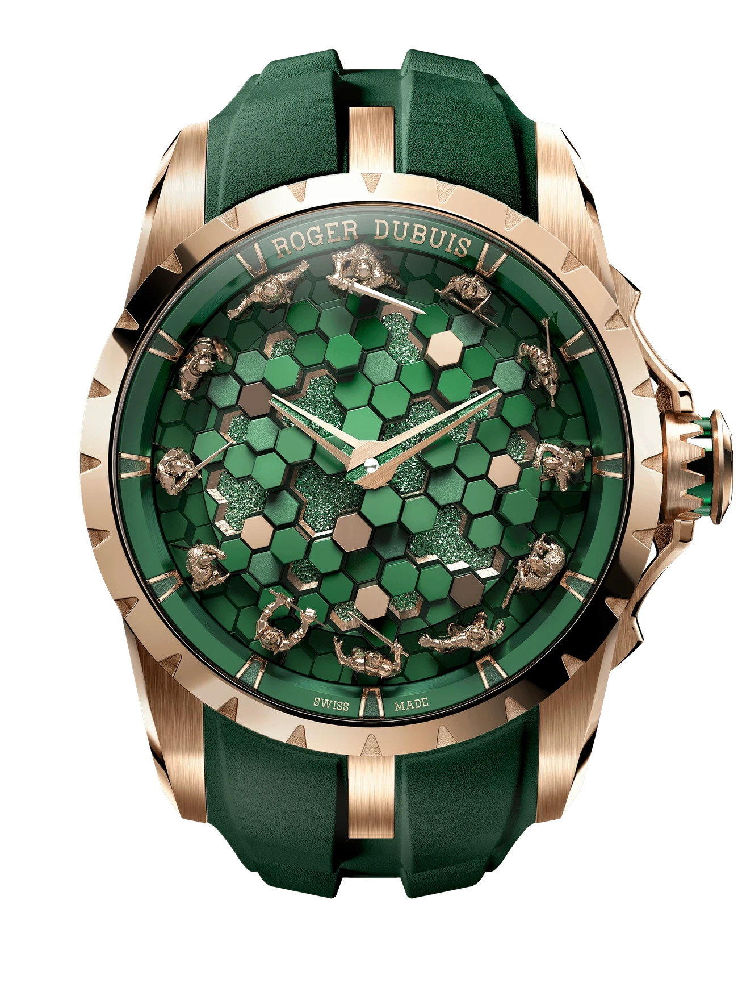
-
The Omniscient Merlin
Merlin lifts the hexagonal stones of the Giant’s Causeway and carries them to England, to build a monument some believe to be Stonehenge. The dial is set with genuine basalt.
Chapter I, 2024. Sold out
-
The Enchanter Merlin
For Viviane, the Lady of the Lake, Merlin hides a palace of crystal, invisible to the world. Stone gives way to white enamel, Crystallium® and hexagonal-cut diamonds.
Chapter II, 2025
-
The Metamorph Merlin
In Brocéliande, Merlin passes through the trees as a white stag, between the visible and the invisible worlds. The dial takes its green from that forest.
Chapter III, 2026
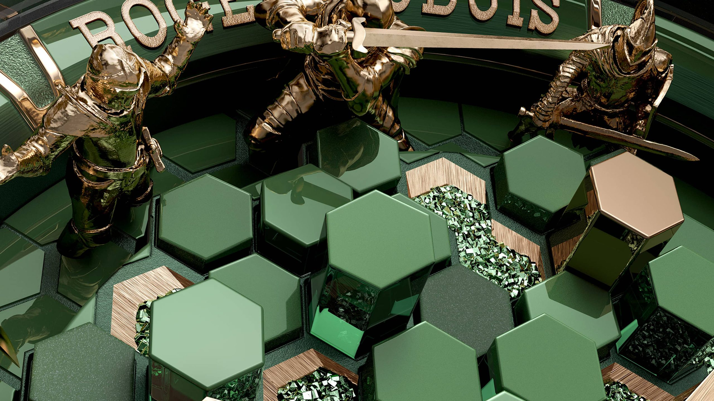
A forest of 57 blocks
Four materials, four decoration techniques. Shot-blasted and polished glass with green CVD coating, polished pink gold, transparent glass and Crystallium® inlays rise to different heights, in the hexagonal pattern of the Giant’s Causeway first laid in chapter I.
Crystallium® inlays, green CVD coating
Polished pink gold
Polished glass, green CVD coating
Shot-blasted glass, green CVD coating
Transparent glass
Transparent glass, green CVD coating
The twelve
Around the dial, the twelve knights of the Round Table take their positions. Each is cast in pink gold, then passes into the hands of a specialist engraver, who sculpts, engraves and patinates it until it holds its own posture and its own personality.
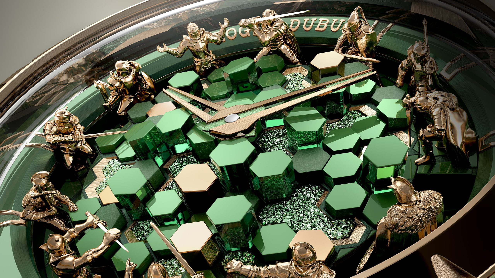
Each knight stands six millimetres tall and spends up to three days in the engraver’s hands: some thirty-six days for the twelve.
The case
For the first time in the collection, the pink gold case middle is engraved by hand, in micro-relief. Sword-shaped guards frame the crown, itself inlaid with green CVD-coated pink gold, and a sapphire crystal ring runs under the bezel.
Some seventy hours of hand engraving, for a single case.
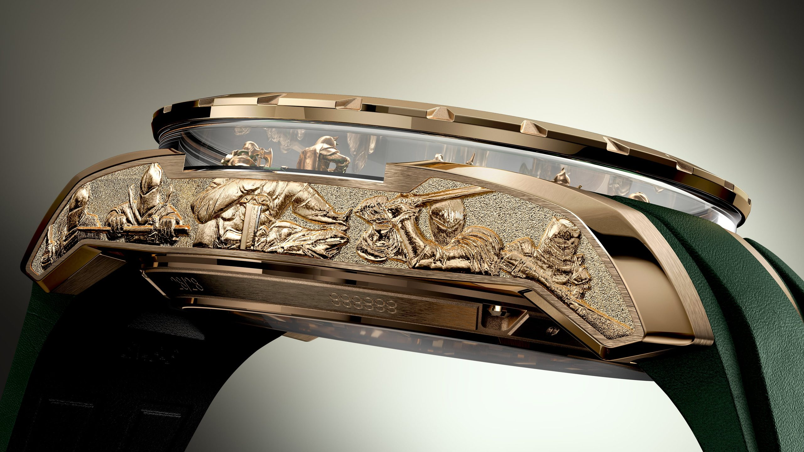
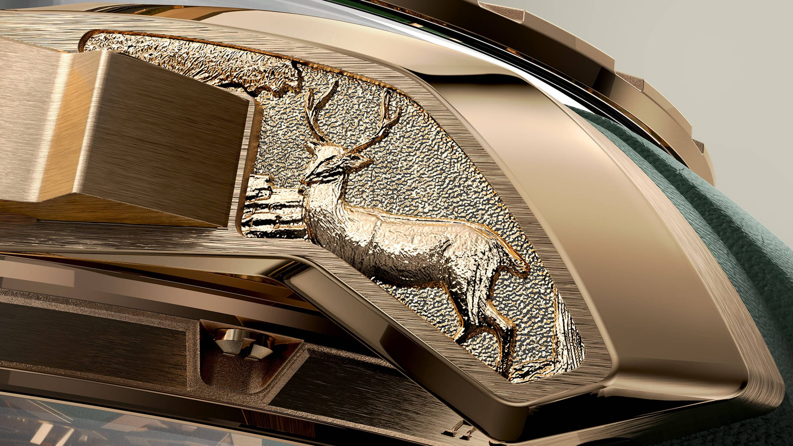
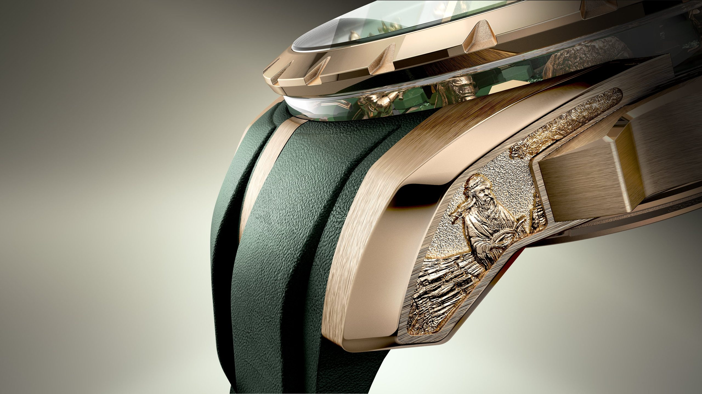
“Around this table, the bravest knights will gather as equals. They will set forth in search of adventure, righting wrongs, protecting the weak and humbling the proud.”
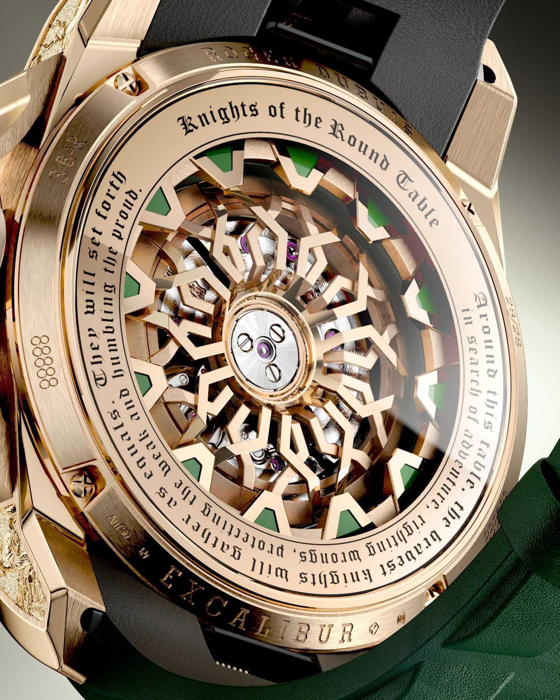
RD821
Monobalancier
Roger Dubuis’s automatic mechanical movements display the hours and minutes. All parts of the movement are hand-finished according to the traditional criteria of the Poinçon de Genève.
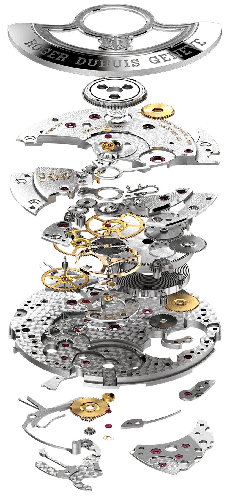
Movement
- Winding
- Automatic, self-winding
- Indications
- Hours, minutes
- Power reserve
- 48 hours
- Frequency
- 28,800 vph
- Components
- 172
- Jewels
- 33
- Diameter
- 11½‴
- Thickness
- 3.43 mm
- Decoration
- Rhodium-plated Côtes de Genève
The piece
- Reference
- RDDBEX1118
- Case
- Pink gold 750/1000, 45 mm
- Bezel
- Sapphire crystal ring beneath
- Case back
- Open
- Water resistance
- 3 bar (30 m)
- Strap
- Calf leather, Quick Release System
- Edition
- 28 pieces
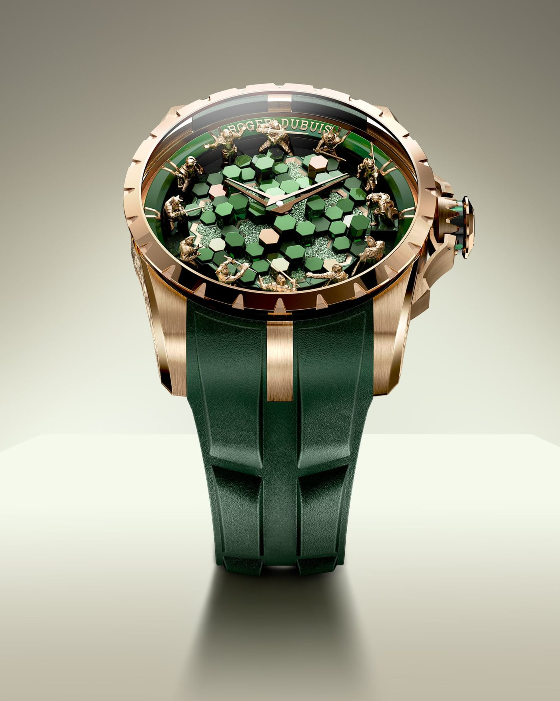
28 seats at the table
The Metamorph Merlin, our last chapter, is limited to 28 pieces.
Why 28? Roger Dubuis’s student number was 208, and the Maison still sets its limited editions by his lucky 8.
Thank you, . One of our ambassadors will be in touch personally.
Or plan a visit to a boutique